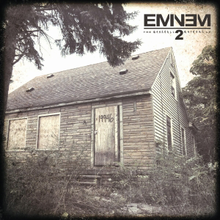

Marshall Mathers III a.k.a EMIN∃M

Album Name: The Marshall Mathers LP 2
Tracklist
Itallics = Track has a Music Video
Bold = My Favorite Tracks On The Album
- 1. Bad Guy (ft Sarah Jaffe) 7:14
- 2. Parking Lot (skit) 0:55
- 3. Rhyme Or Reason 5:01
- 4. So Much Better 4:21
- 5. Survival 4:32
- 6. Legacy 4:56
- 7. A****** (ft Skylar Grey) 4:48
- 8. Berzerk 3:58
- 9. Rap God 6:03
- 10. Brainless 4:46
- 11. Stronger Than I Was 5:36
- 12. The Monster (ft Rihanna) 4:10
- 13. So Far... 5:17
- 14. Love Game (ft Kendrick Lamar) 4:56
- 15. Headlights (ft Nate Ruess) 5:43
- 16. Evil Twin 5:56
*Deluxe edition bonus disc
- 1. Baby 4:23
- 2. Desperation (ft Jamie N Commons) 3:56
- 3. Groundhog Day 4:53
- 4. Beautiful Pain (ft Sia) 4:25
- 5. Wicked Ways (ft X Ambassadors) 6:32
*Call Of Duty Ghosts bonus track
- Don't Front (ft Buckshot) 4:44
Eminem's Discotography:
Name Year Type Infinite 1996 Studio Album The Slim Shady EP 1997 Extended Play The Slim Shady LP 1999 Studio Album The Marshall Mathers LP 2000 Studio Album The Eminem Show 2002 Studio Album 8 Mile 2002 Movie Soundtrack Encore 2004 Studio Album Curtian Call: The Hits 2005 Greatest Hits Album Relapse 2009 Studio Album Recovery 2010 Studio Album Bad Meets Evil - Hell: The Sequel 2011 Studio Album Eminem - The Marshall Mathers LP 2 2013 Studio Album Shady XV 2014 Greatest Hits Album Southpaw 2015 Movie Soundtrack Revival 2017 Studio Album
Eminem's Greatest Hits:
Track Year Album My Name Is 1999 The Slim Shady LP Guilty Conscience (ft Dr. Dre) 1999 The Slim Shady LP The Real Slim Shady 2000 The Marshall Mathers LP The Way I Am 2000 The Marshall Mathers LP Stan (ft Dido) 2000 The Marshall Mathers LP Without Me 2002 The Eminem Show Cleanin' Out My Closet 2002 The Eminem Show Lose Yourself 2002 8 Mile Movie Soundtrack Superman 2003 The Eminem Show Sing For The Moment 2003 The Eminem Show Just Lose It 2004 Encore Encore (ft Dr. Dre & 50 Cent) 2004 Encore Like Toy Soldiers 2005 Encore When I'm Gone 2005 Curtian Call: The Hits Shake That (ft Nate Dogg) 2006 Curtian Call: The Hits You Don't Know (ft 50 Cent, Cashis & Lloyd Banks) 2006 Eminem Presents: The Re-Up Crack A Bottle (ft Dr. Dre and 50 Cent) 2009 Relapse We Made You 2009 Relapse Not Afraid 2010 Recovery Love The Way You Lie (ft Rihanna) 2010 Recovery No Love (ft Rihanna) 2010 Recovery Berzerk 2013 The Marshall Mathers LP 2 Survival 2013 The Marshall Mathers LP 2 Rap God 2013 The Marshall Mathers LP 2 The Monster (ft Rihanna) 2013 The Marshall Mathers LP 2 Headlights (ft Nate Ruess) 2014 The Marshall Mathers LP 2 Guts Over Fear (ft Sia) 2014 Shady XV Phenomenal 2015 South Paw Movie Soundtrack Walk on Water (ft Beyoncé) 2017 Revival River (ft Ed Sheeran) 2017 Revival Untouchable 2017 Revival Framed 2018 N/A
| Eminem's Website | |
|---|---|

|
EminemVEVO |

|
Eminem's Twitter |
|
|
Eminem's Instagram |